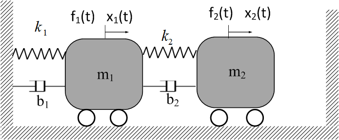
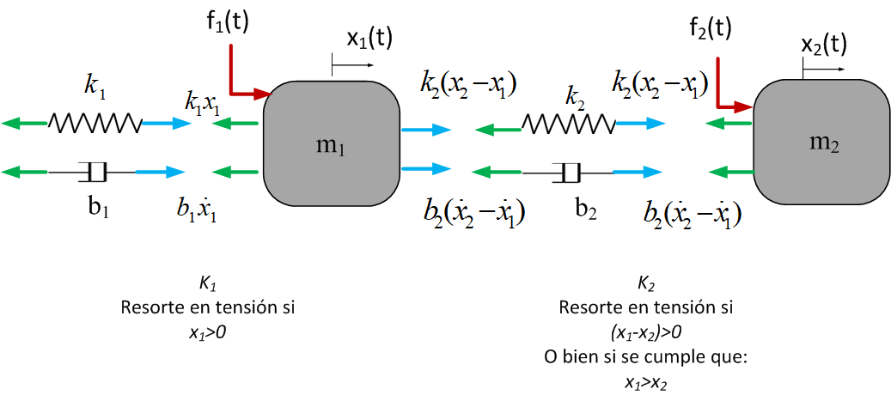

En esta práctica, usaremos la herramienta del análisis de la respuesta en frecuencia para analizar un sitema de dos grados de libertad. El sistema bajo análisis tiene por ende dos diagramas de dode diferentes, aunque dependientes el uno del otro.
Sistema mecánico vibratorio.
Considere el sistema mecánico vibratorio de dos grados de libertad que se muestra en la Figura 6

Figura 6 Sistema mecánico vibratorio.
Las ruedas representan una fricción nula entre la base y las dos masas por lo que los últimos elementos disipativos son los amortiguadores \(b_1\) y \(b_2\) . Aplicando la segunda ley de Newton a cada una de las masas se obtienen las ecuaciones de movimiento del sistema. El diagrama de cuerpo libre de ambas masas y sus interacciones se muestran en la Figura 7

Figura 7 Diagrama de cuerpo libre del sistema de dos grados de libertad.
\[\begin{split}\begin{eqnarray}\nonumber
m_1\ddot{x}_1=f_1(t)-k_1x_1-b_1\dot{x}_1+k_2(x_2-x_1)+b_2(\dot{x}_2-\dot{x}_1)\\
m_2\ddot{x}_2=f_2(t)-k_2(x_2-x_1)-b_2(\dot{x}_2-\dot{x}_1)
\end{eqnarray}\end{split}\]
Simplificando y agrupando:
\[\begin{split}\begin{eqnarray}\nonumber
m_1\ddot{x}_1+b_1\dot{x}_1+b_2(\dot{x}_1-\dot{x}_2)+k_1x_1+k_2(x_1-x_2)=f_1(t)\\
m_2\ddot{x}_2-b_2(\dot{x}_2-\dot{x}_1)+k_2(x_2-x_1)=f_2(t)
\end{eqnarray}\end{split}\]
También se puede escribir como:
(68) \[\begin{split}\begin{eqnarray}
m_1\ddot{x}_1+(b_1+b_2)\dot{x}_1-b_2\dot{x}_2+(k_1+k_2)x_1+k_2x_2=f_1(t)\\
m_2\ddot{x}_2-b_2\dot{x}_1-b_2\dot{x}_2-k_2x_1+k_2x_2=f_2(t)
\end{eqnarray}\end{split}\]
Aplicando la transformada de Laplace a la ecuación (68) se obtiene:
\[\begin{split}
\small
\begin{eqnarray}
m_1\left [s^2X_1(s)-sx_1(0)-\dot{x}_1(0) \right ]+(b_1+b_2)\left [ sX_1(s)+x_1(0)\right ]-b_2\left [ sX_2(s)-x_2(0)\right ]+(k_1+k_2)X_1(s)-k_2X_2(s)=F_1(s)\\
m_2\left [s^2X_2(s)-sx_2(0)-\dot{x}_2(0) \right ]-b_2\left [ sX_1(s)-x_1(0)\right ]+b_2\left [ sX_2(s)-x_2(0)\right ]-k_2X_1(s)+k_2X_2(s)=F_2(s)
\end{eqnarray}
\end{split}\]
Agrupando \(X_1(s)\) y \(X_2(s)\) se obtiene:
(69) \[\small
\begin{equation}
\left [m_1s^2+(b_1+b_2)s+(k_1+k_2)\right ]X_1(s)-[b_2s+k_2]X_2(s)=F_1(s)+m_1[sx_1(0)-\dot{x}_1(0)]+(b_1+b_2)x_1(0)-b_2x_2(0)
\end{equation}\]
(70) \[\small
\begin{equation}
-\left [b_2s+k_2\right ]X_1(s)+\left [ m_2s^2+b_2s+k_2\right ]X_2(s)=F_2(s)+m_2[sx_2(0)-\dot{x}_2(0)]-b_2x_1(0)+b_2x_2(0)
\end{equation}\]
Las ecuaciones (69) y (70) son un conjunto o sistema de ecuaciones linealmente indendientes, que es posible resolver para las incógnitas \(X_1(s)\) y \(X_2(s)\) . Resolviendo para \(X_1(s)\) por regla de Crammer se tiene que:
\[
X_1(s)=\frac{\Delta X_1}{\Delta}
\]
donde:
\[\begin{split}
\Delta=det \left ( \begin{bmatrix}
m_1s^2+(b_1+b_2)s+(k_1+k_2)&-[b_2s+k_2]\\
-\left [b_2s+k_2\right ]&m_2s^2+b_2s+k_2
\end{bmatrix} \right )
\end{split}\]
De donde se desprende que:
(71) \[\Delta=\left ( m_1s^2+(b_1+b_2)s+(k_1+k_2)\right )\left ( m_2s^2+b_2s+k_2\right )-[b_2s+k_2]^2\]
El determinante \(\Delta\) resulta ser el polinomio característico del sistema, las raices del polinomio característico contienen las frecuencias naturales \(\omega_1\) y \(\omega_2\) y los fractores de amortiguamiento \(\xi_1\) y \(\xi_2\) . El determinante \(\Delta X_1\) se obtiene al reemplazar a la primera columna por el vector de resultados del sistema de ecuaciones cuando se expresa en forma matricial:
\[\begin{split}
\Delta X_1=det \left ( \begin{bmatrix}
F_1(s)+m_1[sx_1(0)-\dot{x}_1(0)]+(b_1+b_2)x_1(0)-b_2x_2(0)&-[b_2s+k_2]\\
F_2(s)+m_2[sx_2(0)-\dot{x}_2(0)]-b_2x_1(0)+b_2x_2(0)&m_2s^2+b_2s+k_2
\end{bmatrix} \right )
\end{split}\]
De manera similar, \(\Delta X_1\) se expresa como:
\[\begin{split}
\begin{eqnarray}
\Delta X_1=\left ( F_1(s)+m_1[sx_1(0)-\dot{x}_1(0)]+(b_1+b_2)x_1(0)-b_2x_2(0) \right )\left ( m_2s^2+b_2s+k_2 \right )+...\\
...+\left ( F_2(s)+m_2[sx_2(0)-\dot{x}_2(0)]-b_2x_1(0)+b_2x_2(0) \right ) \left( [b_2s+k_2] \right )
\end{eqnarray}
\end{split}\]
Finalmente \(X_1(s)\) se expresa como:
(72) \[\begin{split}\small
\begin{eqnarray}
X_1(s)=\frac{\left ( F_1(s)+m_1[sx_1(0)-\dot{x}_1(0)]+(b_1+b_2)x_1(0)-b_2x_2(0) \right )\left ( m_2s^2+b_2s+k_2 \right )}{\left ( m_1s^2+(b_1+b_2)s+(k_1+k_2)\right )\left ( m_2s^2+b_2s+k_2\right )-[b_2s+k_2]^2}+...\\
...+\frac{\left ( F_2(s)+m_2[sx_2(0)-\dot{x}_2(0)]-b_2x_1(0)+b_2x_2(0) \right ) \left( [b_2s+k_2] \right )}{\left ( m_1s^2+(b_1+b_2)s+(k_1+k_2)\right )\left ( m_2s^2+b_2s+k_2\right )-[b_2s+k_2]^2}
\end{eqnarray}\end{split}\]
De manera similar se resuelve para \(X_2(s)\) :
\[
X_2(s)=\frac{\Delta X_2}{\Delta}
\]
En este caso se tiene que:
\[\begin{split}
\small
\Delta X_2=det \left ( \begin{bmatrix}
m_1s^2+(b_1+b_2)s+(k_1+k_2)&F_1(s)+m_1[sx_1(0)-\dot{x}_1(0)]+(b_1+b_2)x_1(0)-b_2x_2(0)\\
-\left [b_2s+k_2\right ]&F_2(s)+m_2[sx_2(0)-\dot{x}_2(0)]-b_2x_1(0)+b_2x_2(0)
\end{bmatrix} \right )
\end{split}\]
De manera similar, \(\Delta X_2\) se expresa como:
\[\begin{split}
\begin{eqnarray}
\Delta X_2=\left ( m_1s^2+(b_1+b_2)s+(k_1+k_2) \right )\left ( F_2(s)+m_2[sx_2(0)-\dot{x}_2(0)]-b_2x_1(0)+b_2x_2(0)\right )+...\\
...+\left ( \left [b_2s+k_2\right ] \right ) \left( F_1(s)+m_1[sx_1(0)-\dot{x}_1(0)]+(b_1+b_2)x_1(0)-b_2x_2(0) \right )
\end{eqnarray}
\end{split}\]
Así, \(X_2(s)\) se expresa como:
(73) \[\begin{split}\small
\begin{eqnarray}
X_2(s)=\frac{\left ( m_1s^2+(b_1+b_2)s+(k_1+k_2) \right )\left ( F_2(s)+m_2[sx_2(0)-\dot{x}_2(0)]-b_2x_1(0)+b_2x_2(0)\right ) }{\left ( m_1s^2+(b_1+b_2)s+(k_1+k_2)\right )\left ( m_2s^2+b_2s+k_2\right )-[b_2s+k_2]^2}+...\\
...+\frac{\left ( \left [b_2s+k_2\right ] \right ) \left( F_1(s)+m_1[sx_1(0)-\dot{x}_1(0)]+(b_1+b_2)x_1(0)-b_2x_2(0) \right )}{\left ( m_1s^2+(b_1+b_2)s+(k_1+k_2)\right )\left ( m_2s^2+b_2s+k_2\right )-[b_2s+k_2]^2}
\end{eqnarray}\end{split}\]
Las funciones de transferencia \(G_1(s)\) y \(G_2(s)\) se obtienen cuando se considera a todas las condiciones iniciales nulas, es decir \(x_1(0)=x_2(0)=\dot{x}_1(0)=\dot{x}_2(0)=0\) .
(74) \[\begin{split}\small
\begin{eqnarray}
X_1(s)=\frac{F_1(s)\left ( m_2s^2+b_2s+k_2 \right )}{\left ( m_1s^2+(b_1+b_2)s+(k_1+k_2)\right )\left ( m_2s^2+b_2s+k_2\right )-[b_2s+k_2]^2}+...\\
...+\frac{F_2(s) \left( [b_2s+k_2] \right )}{\left ( m_1s^2+(b_1+b_2)s+(k_1+k_2)\right )\left ( m_2s^2+b_2s+k_2\right )-[b_2s+k_2]^2}
\end{eqnarray}\end{split}\]
(75) \[\begin{split}\small
\begin{eqnarray}
X_2(s)=\frac{\left ( m_1s^2+(b_1+b_2)s+(k_1+k_2) \right ) F_2(s) }{\left ( m_1s^2+(b_1+b_2)s+(k_1+k_2)\right )\left ( m_2s^2+b_2s+k_2\right )-[b_2s+k_2]^2}+...\\
...+\frac{\left ( \left [b_2s+k_2\right ] \right ) F_1(s)}{\left ( m_1s^2+(b_1+b_2)s+(k_1+k_2)\right )\left ( m_2s^2+b_2s+k_2\right )-[b_2s+k_2]^2}
\end{eqnarray}\end{split}\]
Para el caso de sistemas de múltiples grados de libertad se obtiene un matriz de transferencia, en el caso particular de este sistema, la ecuación en forma matricial es:
(76) \[\begin{split}\begin{bmatrix}
X_1(s)\\
X_2(s)
\end{bmatrix}=\begin{bmatrix}
G_{11}(s)&G_{12}(s)\\
G_{21}(s)&G_{22}(s)
\end{bmatrix}\begin{bmatrix}
F_1(s)\\
F_2(s)
\end{bmatrix}\end{split}\]
donde
\[\begin{split}
G(s)=\begin{bmatrix}
\frac{m_2s^2+b_2s+k_2}{\left ( m_1s^2+(b_1+b_2)s+(k_1+k_2)\right )\left ( m_2s^2+b_2s+k_2\right )-[b_2s+k_2]^2}&\frac{ b_2s+k_2}{\left ( m_1s^2+(b_1+b_2)s+(k_1+k_2)\right )\left ( m_2s^2+b_2s+k_2\right )-[b_2s+k_2]^2}\\
\frac{b_2s+k_2}{\left ( m_1s^2+(b_1+b_2)s+(k_1+k_2)\right )\left ( m_2s^2+b_2s+k_2\right )-[b_2s+k_2]^2}&\frac{ m_1s^2+(b_1+b_2)s+(k_1+k_2)}{\left ( m_1s^2+(b_1+b_2)s+(k_1+k_2)\right )\left ( m_2s^2+b_2s+k_2\right )-[b_2s+k_2]^2}
\end{bmatrix}
\end{split}\]
{kind=link}
{kind=link}